Digital Marketing - Charity
Digital Marketing - Charity
-
Subject
Digital Marketing -
UX Team
Angeline Andersson, Anna Kapczuk & Tomas Haga -
Role
UX research, concept development, visual identity, illustration & animation -
Timeframe
4 weeks: September - October, 2021
-
Task
Create a support campaign for a charity case, by our own choice, in form of promotional website with an additional advertisement.
We chose Kors på halsen, from Norwegian Red Cross. -
Product
Kors på halsen, Red Cross Helpline for children and Youth; a free helpline for children and youth up to 18 years old. They can either call, send mail or chat and and talk about everything they have on their mind, you will talk to an adult you can trust, and its anonymous.
How to engage adults to engage in the lives of disadvantaged children? Progress plan 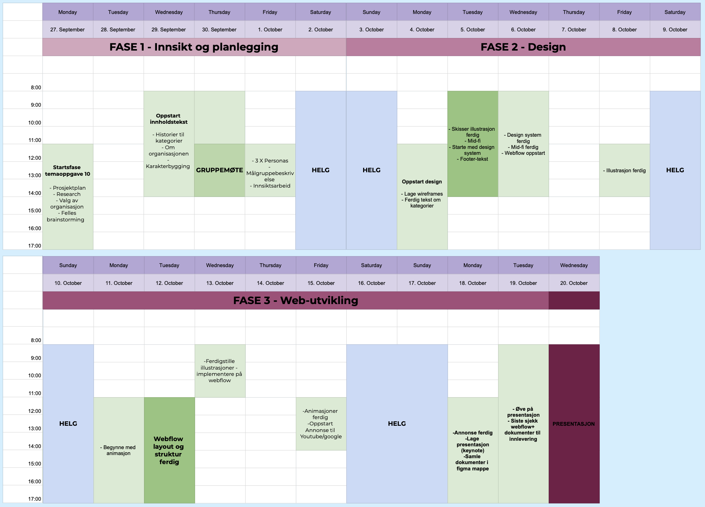 Design Tools Design Prosess 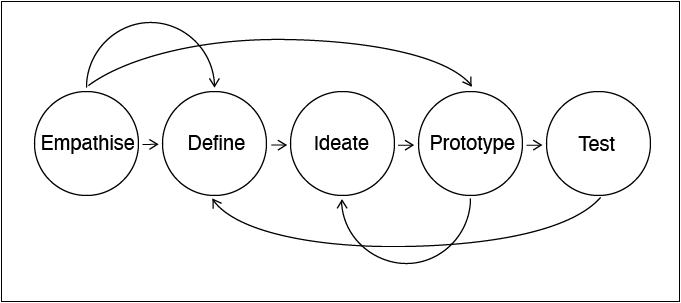
This helpline has existed since 1984, and there is around 160 volunteers in Norway today. As well a part of the large Global network Child Helpline International.
korspaahalsen.rodekors.no/om-oss 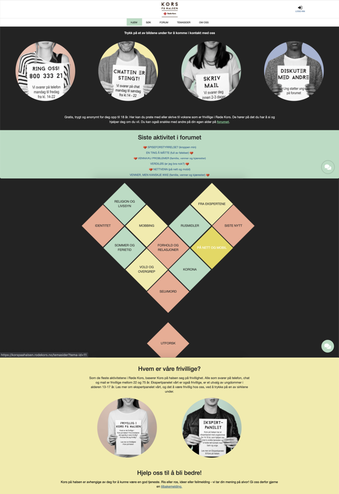Selected sub-themes we wanted to highlight in the campaign:
- - Child abuse
- - Bullying
- - Suicide
The reason we choosing these themes is to highlight the most common issues and questions from the children. These are serious topics that are important to present how serious and relevant those are in the lives of children and youth, in a respectable way.
Child neglect and child abuse is often divided into 4 categories:
- - Mental abuse
- - Physical abuse
-
- Absence of actions, in the form of physical
and emotional neglect and neglect. -
- Other types of violence against children (bullying,
witnesses of violence or violence in close relationships.)
Child abuse and neglect are performed by definition of the caregiver(s), as the person(s) who is responsible for the care. Caregivers can be parents, foster parents, staff at child welfare institutions, but also coaches or others who have temporary care for the child. The definition of children in this context ranges from 0-18 years. nhi.no/sykdommer/barn/omsorgssvikt-og-barnemishandling/barnemishandling
Child welfare cases in 2020:
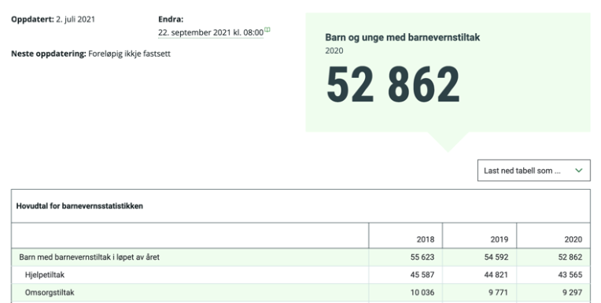 www.ssb.no/sosiale-forhold-og-kriminalitet/barne-og-familievern/statistikk/barnevern Target groupThe target group consists of a broad group of people ranging from 22 to 65+ years. What they have in common is that they are all concerned with the everyday lives of children and young people, that they thrive in their surroundings and those around them. They are empathetic towards the upbringing of children and young people, and want to make a difference for those who fall outside a safe environment and framework. This is a group of people who, on the basis of this, are engaged in charitable and voluntary work for organizations that work with specific goals and issues.
PersonasWe created 3 different personas who matches the description of the target group.
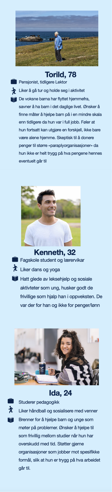 Concept and text contentFocusing on the sub-themes, we decided to create three fictive stories about a child or youth, based on related theme.
Espen:
This Is Espen, he is 9 years old. Espen is not like other child at school. He has recently moved from his hometown and started a new school, and he had a different dialect than the other children. Everyday, he worries about walking to school, because of the other children who makes fun of his dialect. Every time it rains the older children at the school throws his backpack in the puddle.
Tobias:
It rumbles in the stomach of Tobias who after a long day at school is hungry, but there's no dinner at the table. There is nothing to find for Tobias in the fridge, it is almost empty and much of the food has gone wrong. This is not the first time Tobias didn't receive dinner or find any food to eat at home. Mother rarely cooks or takes care of the home, she often sleeps on the sofa while watching loud TV in the background.
Nora:
It's getting late and Nora is always worried when it gets dark outside. This means that she has to be alone in the room with herself and her thoughts. The last years in high school was not that easy, as well she was told she had to repeat the last year again. She hasn't had the courage to tell anyone that she has felt lonely and sad for a few years, so no one at school or at home understands how she actually really felt.
Facts based on statistics:
Espen is only 1 in 26,652 children in Norway who experience and live with some form of bullying.
Tobias is only 1 in 52,862 children in Norway who experience child neglecting in one degree or more.
Nora is not alone, almost 298,009 out of 895,026 young people in Norway have thoughts about suicide.
Footer
Who are we? We are three students from Interaction Design at Kristiania University College. We have been tasked with creating a campaign website for a chosen purpose. We chose to create a campaign for Kors på halsen, an anonymous helpline service for children and youth up to the age of 18.
Lo-fi Wireframe
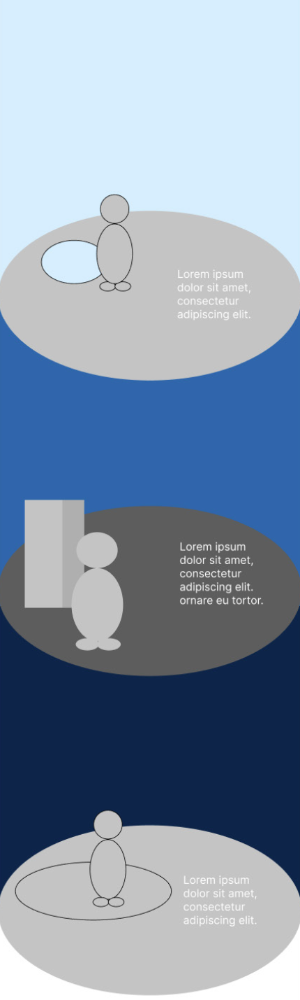 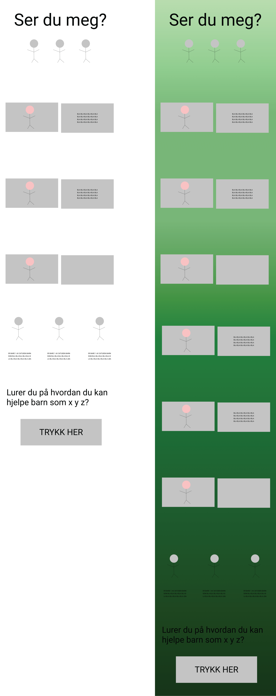 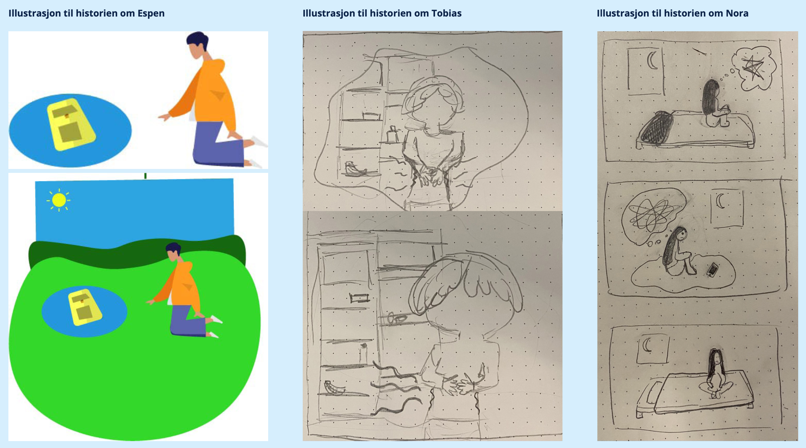 Design SystemColor
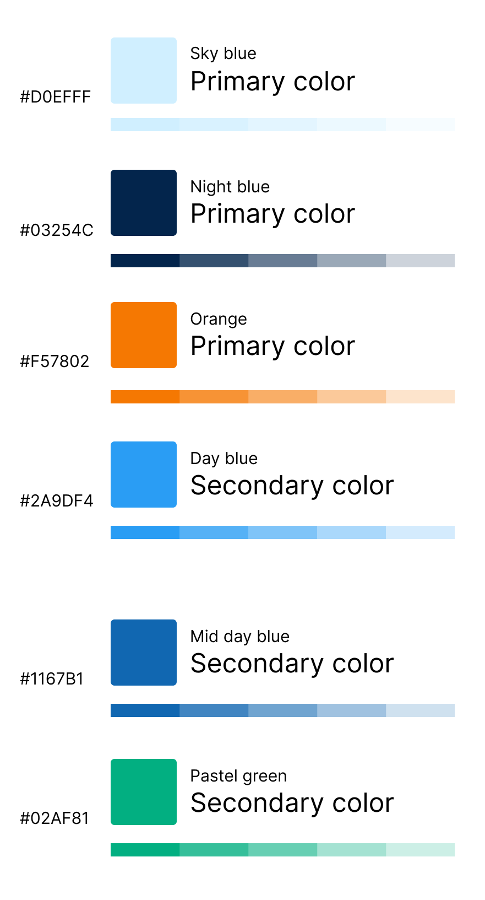Typography
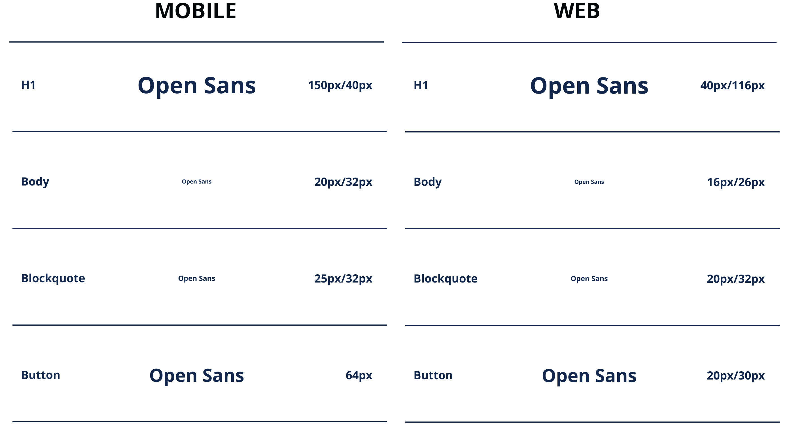Spacing & Buttons
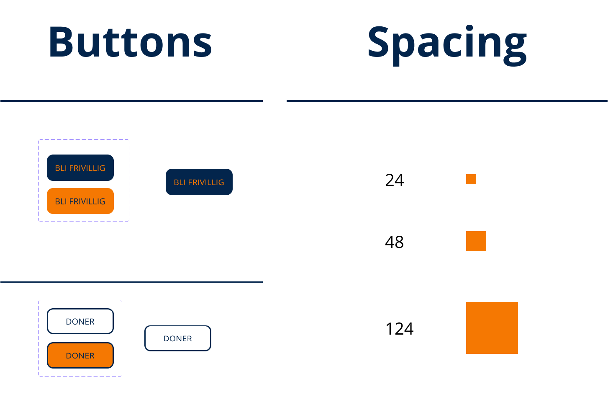 Web Content Accessibility Guideline 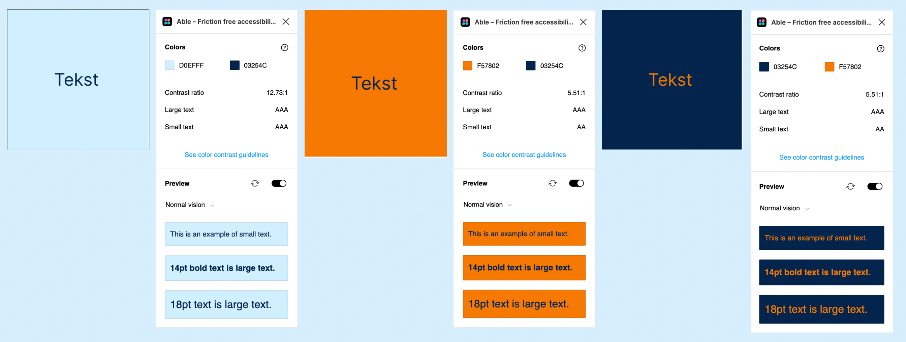 Mid-fi prototypeDesktop & Mobile
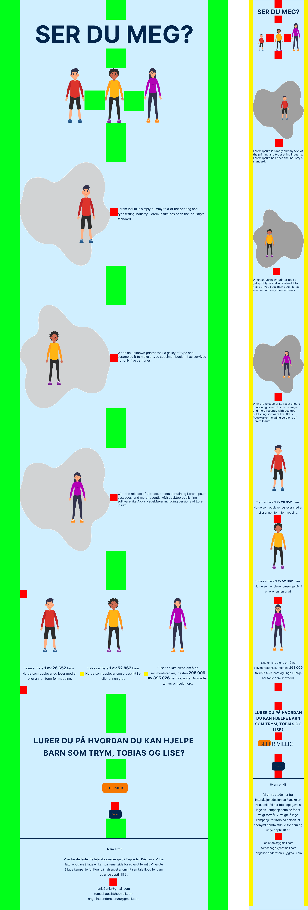 IllustrationsMaking figures with help of using vector illustrations. Workspace: Illustrator
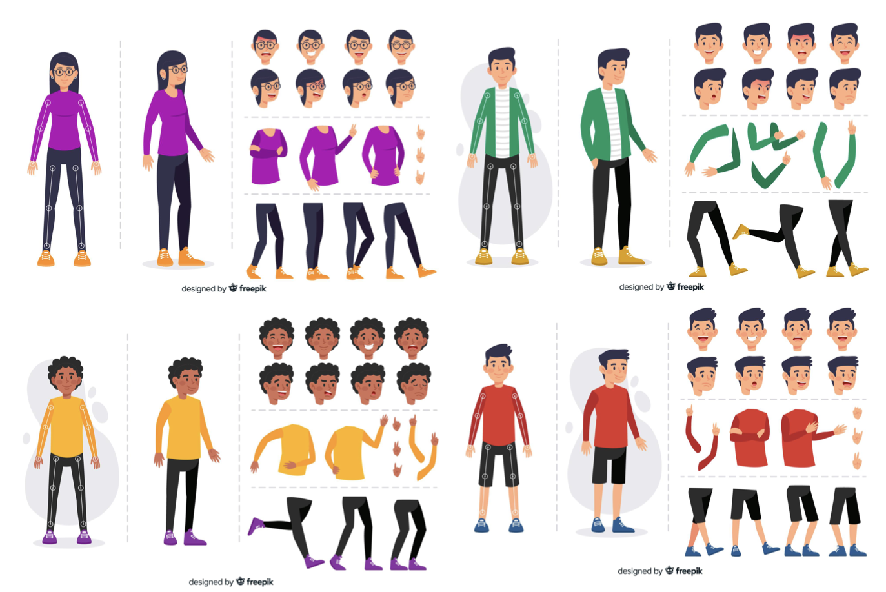Espen, Tobias & Nora
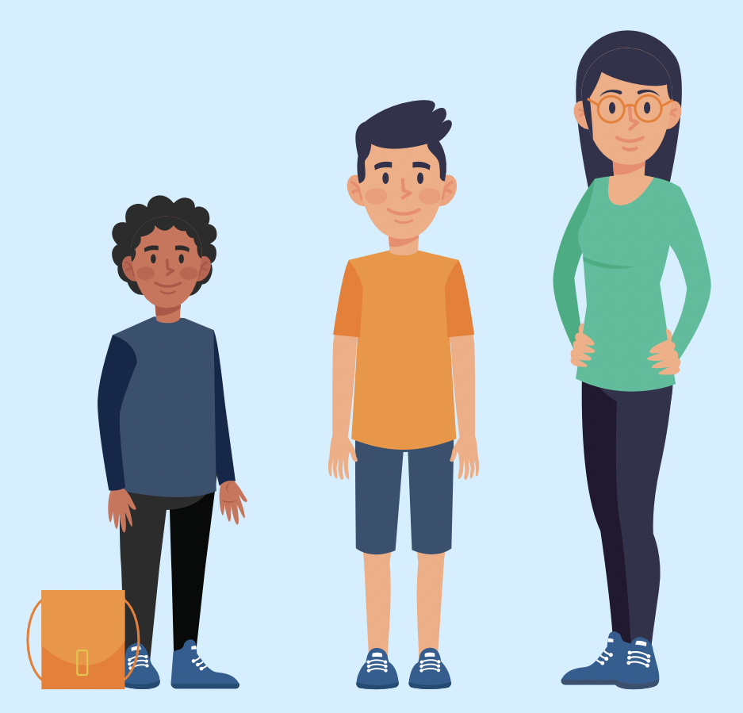Illustrations for animation
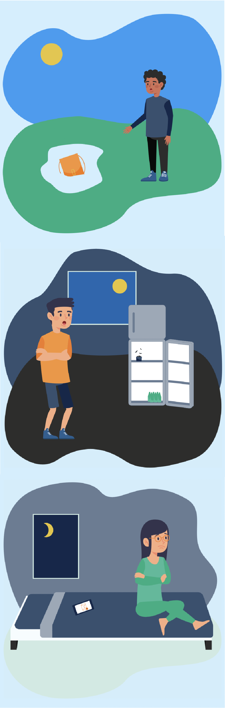All illustrations were made in Adobe Illustrator, making sure that the layers would fit the anchor points in After Effect later in the progress
Hi-Fi PrototypeDesktop & Mobile
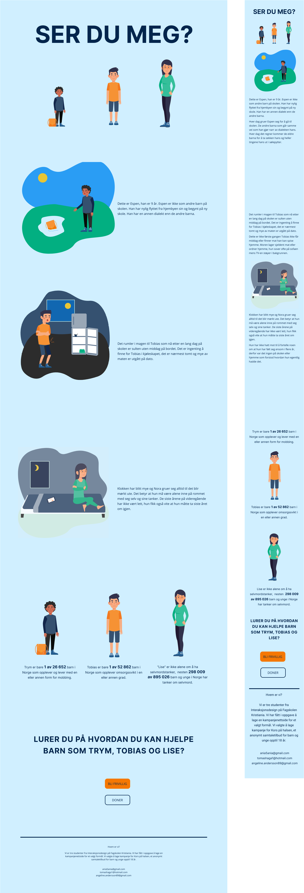Ser du meg - Campaign Page, using Webflow
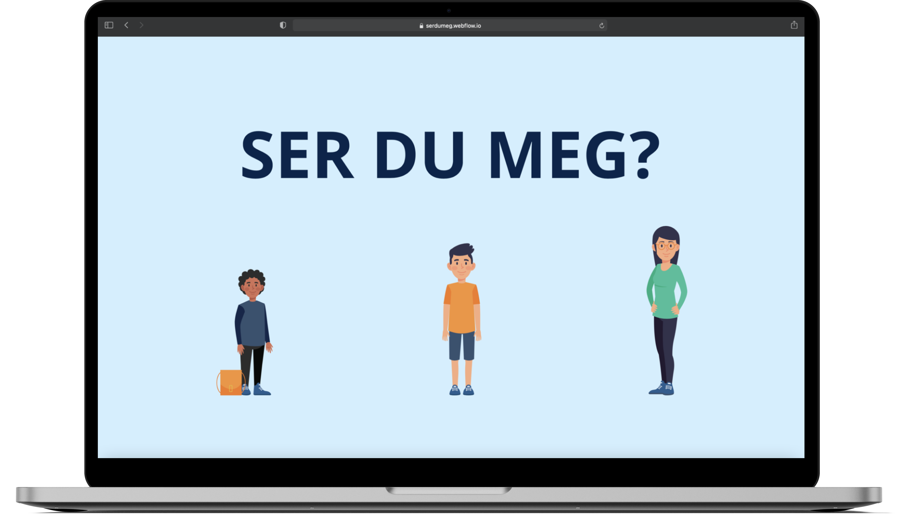Headline:
Ser du meg? (Do you see me?)
Text
Espen og andre barn i Norge trener noen å snakke med. Finn ut av hvordan du kan hjelpe her (Espen and other children in Norway needs someone to talk to. Find out more here)
Open GraphUsing Open Graph to manage how the web-content is presented in ad.
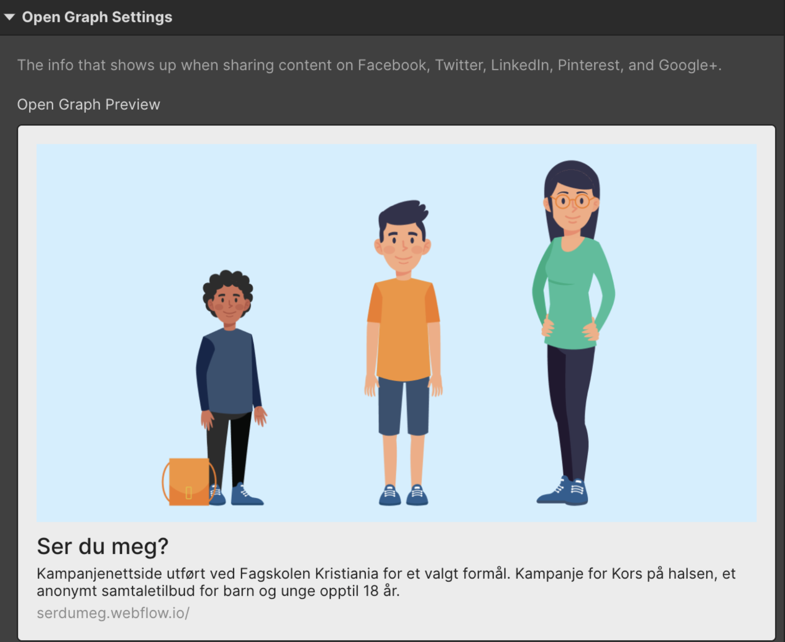 Hotjar & Google AnalyticsUsing Hotjar and Google Analytics to observe statistics.